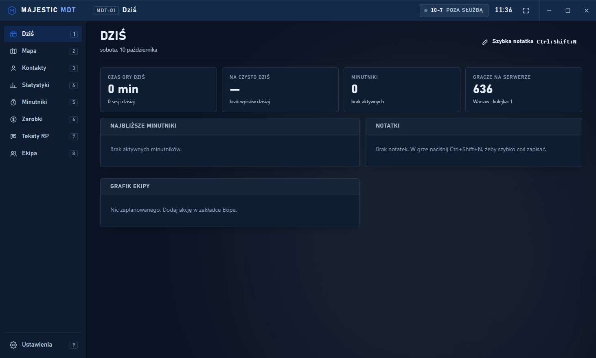
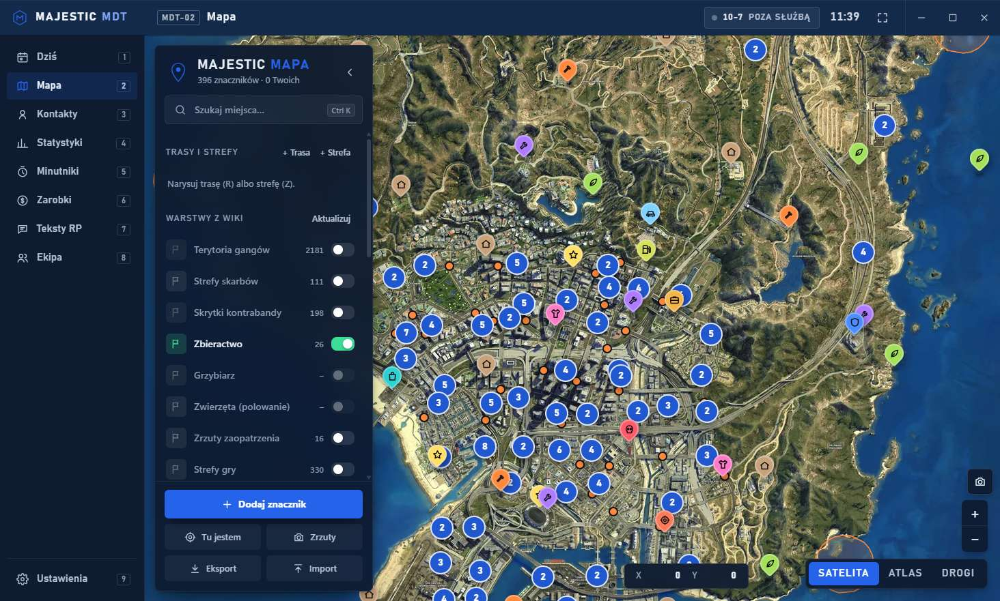
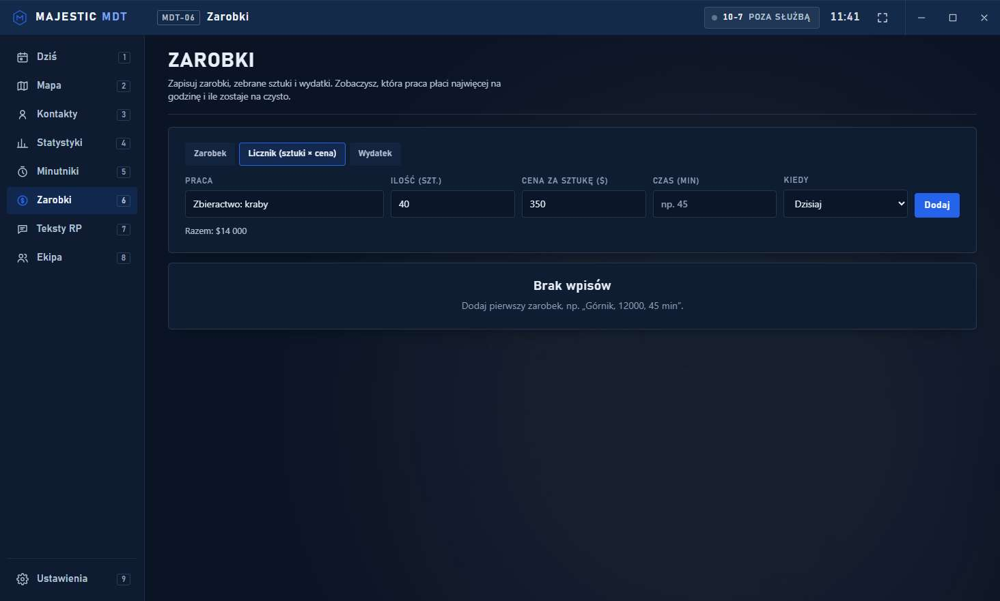
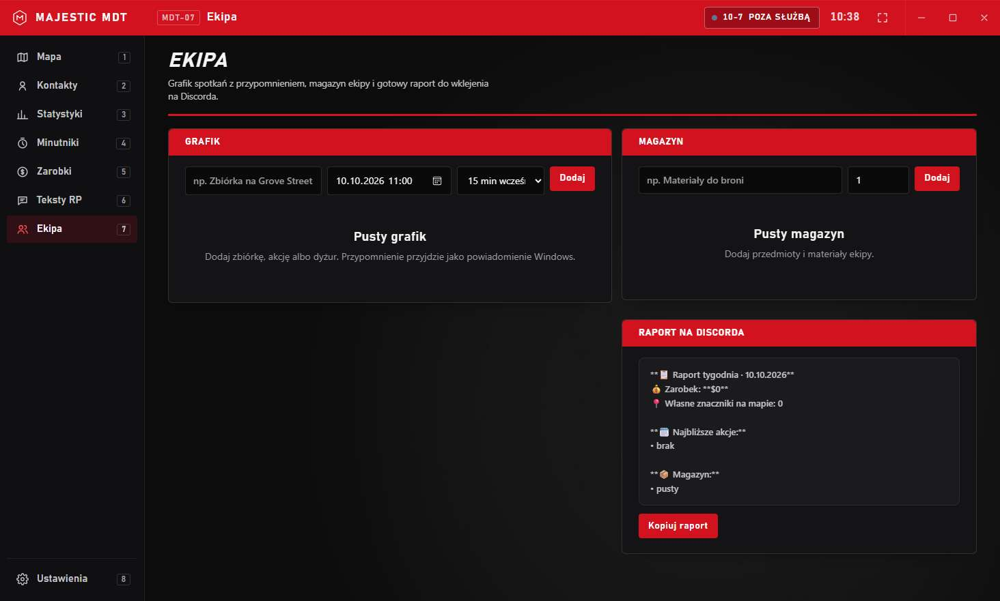

Twój terminal na Majestic RP
Mapa z wiki, zarobki, minutniki, crafting, postać, ekipa na żywo i widżet nad grą w jednym oknie. Powiadomienia także na telefon. Za darmo, na Windows.
Windows 10/11 · ok. 45 MB · skrót na pulpicie · aktualizuje się jednym kliknięciem · wersja zip

Jedenaście modułów, jedno okno
Przełączasz je skrótami Ctrl+1–0. Ctrl+Space przeszukuje wszystko naraz, a Ctrl+Shift+N zapisuje notatkę nawet w trakcie gry.
Dziś
Czas gry, zarobek na czysto, minutniki, kalendarz miesiąca, cele tygodnia, zadania dnia, osiągnięcia i raport tygodnia jako obrazek na Discorda.
Mapa
396 miejsc z wiki, terytoria gangów z notatkami i przypomnieniem o wojnie, zbieractwo, fotoradary, trasy z czasem i kosztem paliwa, wyszukiwanie adresów i mapa ekipy na żywo z czatem, rankingiem i profilem ekipy.
Kontakty
Numery, frakcje i długi. Kontakt łączysz z miejscem na mapie.
Statystyki
Czas gry z logów launchera, gracze na serwerze, godziny szczytu, ranking najmniej zatłoczonych serwerów i zmiany w grze.
Minutniki
Cooldowny, PayDay i opłaty z powiadomieniem Windows, na telefonie i głosem, także z grą na pierwszym planie.
Zarobki
Zarobki, licznik sztuk, wydatki, $/godz., najlepsza praca o tej porze, statystyki tygodni, cele zakupowe i majątek z przypomnieniem o opłatach.
Rynek
1096 pojazdów, 2371 nieruchomości, 204 biznesy i tatuaże z wiki. Porównanie, planer zakupu i pokazanie na mapie.
Crafting
69 przepisów kuchennych i crafting frakcji z wiki, koszt i zysk oraz lista zakupów z kilku przepisów naraz.
Postać i RP
Karta postaci (też jako obrazek), generator, gotowe /me i /do, dziennik, galeria zrzutów, radio i kody 10-x oraz kalkulator mandatów.
Ekipa
Grafik i magazyn na żywo z ekipą, rozliczenie akcji, szablony ogłoszeń i raport na kanał Discorda.
Ustawienia
12 motywów (też LSPD, EMS i gangi), profile postaci, powiadomienia na telefon, synchronizacja z drugim komputerem, eksport do Excela i kopia w chmurze.
Nowe w wersji 2.8
Widżet nad grą pokazuje PayDay, minutniki, licznik zbierania (Ctrl+Shift+Z / X), cel zakupowy i ekipę online. Powiadomienia mogą przychodzić też na telefon przez darmową aplikację ntfy.
Zrzut do galerii
Jeden klawisz w grze zapisuje zrzut ekranu w galerii z opisem i tagami.
Asystent głosowy
Aplikacja czyta na głos PayDay, minutniki i wojny, więc nie musisz patrzeć na ekran.
Grafik na żywo
Akcja dodana przez jedną osobę od razu pojawia się u całej ekipy.
Drugi komputer
Zaszyfrowana kopia danych przechodzi na drugi komputer przez wspólny kod.
Szablony ogłoszeń
Sprzedam auto, szukam ekipy, rekrutacja: uzupełniasz pola i wysyłasz jednym kliknięciem.
Tryb oszczędny
Na laptopie bez zasilacza aplikacja sama wyłącza animacje.
Tak to wygląda
Ciemny granat jak tablet w radiowozie albo jeden z pięciu innych motywów, np. Weazel News.



Instalacja w minutę
Bez instalatora i bez konta.
- Pobierz MajesticCompanionSetup.exe.
- Uruchom instalator i kliknij „Tak”. Windows może zapytać o zgodę, bo program nie ma płatnego podpisu: wybierz „Więcej informacji” → „Uruchom mimo to”.
- Aplikacja startuje sama, a skrót masz na pulpicie. Nowe wersje instalujesz jednym kliknięciem w Ustawieniach.
Bezpiecznie dla konta
Nie dotyka gry
Nie czyta pamięci gry i nic do niej nie wstrzykuje. Czyta tylko logi, które launcher Majestic sam zapisuje na dysku.
Dane u Ciebie
Znaczniki, kontakty i zarobki zostają na Twoim komputerze. Mapa ekipy jest szyfrowana Waszym kodem.
Otwarty kod
Cały kod jest publiczny na GitHubie, więc każdy może sprawdzić, co robi aplikacja.